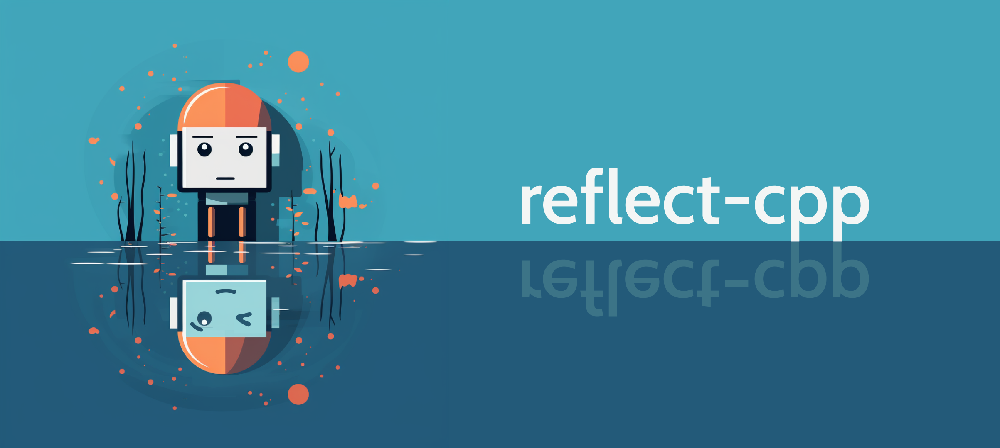

reflect-cpp¶
reflect-cpp¶



reflect-cpp is a C++-20 library for fast serialization, deserialization and validation using reflection, similar to pydantic in Python, serde in Rust, encoding in Go or aeson in Haskell.
As the aforementioned libraries are among the most widely used in the respective languages, reflect-cpp fills an important gap in C++ development. It reduces boilerplate code and increases code safety.
Why use reflect-cpp?¶
- Close integration with containers from the C++ standard library
- Close adherence to C++ idioms
- Out-of-the-box support for JSON
- Simple installation: If no JSON support is required, reflect-cpp is header-only. For JSON support, only a single source file needs to be compiled.
- Simple extendability to other serialization formats
- Simple extendability to custom classes
Serialization formats¶
reflect-cpp provides a unified reflection-based interface across different serialization formats. It is deliberately designed in a very modular way, using concepts, to make it as easy as possible to interface various C or C++ libraries related to serialization. Refer to the documentation for details.
The following table lists the serialization formats currently supported by reflect-cpp and the underlying libraries used:
| Format | Library | Version | License | Remarks |
|---|---|---|---|---|
| JSON | yyjson | >= 0.8.0 | MIT | out-of-the-box support, included in this repository |
| BSON | libbson | >= 1.25.1 | Apache 2.0 | JSON-like binary format |
| CBOR | tinycbor | >= 0.6.0 | MIT | JSON-like binary format |
| flexbuffers | flatbuffers | >= 23.5.26 | Apache 2.0 | Schema-less version of flatbuffers, binary format |
| msgpack | msgpack-c | >= 6.0.0 | BSL 1.0 | JSON-like binary format |
| TOML | toml++ | >= 3.4.0 | MIT | Textual format with an emphasis on readability |
| XML | pugixml | >= 1.14 | MIT | Textual format used in many legacy projects |
| YAML | yaml-cpp | >= 0.8.0 | MIT | Textual format with an emphasis on readability |
Note
Support for more serialization formats is in development. Refer to the issues for details.
Please also refer to the vcpkg.json in this repository.
Simple Example¶
#include <rfl/json.hpp>
#include <rfl.hpp>
struct Person {
std::string first_name;
std::string last_name;
int age;
};
const auto homer =
Person{.first_name = "Homer",
.last_name = "Simpson",
.age = 45};
// We can now write into and read from a JSON string.
const std::string json_string = rfl::json::write(homer);
auto homer2 = rfl::json::read<Person>(json_string).value();
The resulting JSON string looks like this:
{"first_name":"Homer","last_name":"Simpson","age":45}
You can transform the field names from snake_case to camelCase like this:
const std::string json_string =
rfl::json::write<rfl::SnakeCaseToCamelCase>(homer);
auto homer2 =
rfl::json::read<Person, rfl::SnakeCaseToCamelCase>(json_string).value();
The resulting JSON string looks like this:
{"firstName":"Homer","lastName":"Simpson","age":45}
Or you can use another format, such as YAML.
#include <rfl/yaml.hpp>
// ... (same as above)
const std::string yaml_string = rfl::yaml::write(homer);
auto homer2 = rfl::yaml::read<Person>(yaml_string).value();
The resulting YAML string looks like this:
first_name: Homer
last_name: Simpson
age: 45
This will work for just about any example in the entire documentation and any supported format, except where explicitly noted otherwise:
rfl::bson::write(homer);
rfl::cbor::write(homer);
rfl::flexbuf::write(homer);
rfl::msgpack::write(homer);
rfl::toml::write(homer);
rfl::xml::write(homer);
rfl::bson::read<Person>(bson_bytes);
rfl::cbor::read<Person>(cbor_bytes);
rfl::flexbuf::read<Person>(flexbuf_bytes);
rfl::msgpack::read<Person>(msgpack_bytes);
rfl::toml::read<Person>(toml_string);
rfl::xml::read<Person>(xml_string);
More Comprehensive Example¶
#include <iostream>
#include <rfl/json.hpp>
#include <rfl.hpp>
// Age must be a plausible number, between 0 and 130. This will
// be validated automatically.
using Age = rfl::Validator<int, rfl::Minimum<0>, rfl::Maximum<130>>;
struct Person {
rfl::Rename<"firstName", std::string> first_name;
rfl::Rename<"lastName", std::string> last_name = "Simpson";
std::string town = "Springfield";
rfl::Timestamp<"%Y-%m-%d"> birthday;
Age age;
rfl::Email email;
std::vector<Person> children;
};
const auto bart = Person{.first_name = "Bart",
.birthday = "1987-04-19",
.age = 10,
.email = "bart@simpson.com"};
const auto lisa = Person{.first_name = "Lisa",
.birthday = "1987-04-19",
.age = 8,
.email = "lisa@simpson.com"};
const auto maggie = Person{.first_name = "Maggie",
.birthday = "1987-04-19",
.age = 0,
.email = "maggie@simpson.com"};
const auto homer =
Person{.first_name = "Homer",
.birthday = "1987-04-19",
.age = 45,
.email = "homer@simpson.com",
.children = std::vector<Person>({bart, lisa, maggie})};
// We can now transform this into a JSON string.
const std::string json_string = rfl::json::write(homer);
std::cout << json_string << std::endl;
// We can also directly write into std::cout (or any other std::ostream).
rfl::json::write(homer, std::cout) << std::endl;
This results in the following JSON string:
{"firstName":"Homer","lastName":"Simpson","town":"Springfield","birthday":"1987-04-19","age":45,"email":"homer@simpson.com","children":[{"firstName":"Bart","lastName":"Simpson","town":"Springfield","birthday":"1987-04-19","age":10,"email":"bart@simpson.com","children":[]},{"firstName":"Lisa","lastName":"Simpson","town":"Springfield","birthday":"1987-04-19","age":8,"email":"lisa@simpson.com","children":[]},{"firstName":"Maggie","lastName":"Simpson","town":"Springfield","birthday":"1987-04-19","age":0,"email":"maggie@simpson.com","children":[]}]}
We can also create structs from the string:
auto homer2 = rfl::json::read<Person>(json_string).value();
// Fields can be accessed like this:
std::cout << "Hello, my name is " << homer.first_name() << " "
<< homer.last_name() << "." << std::endl;
// Since homer2 is mutable, we can also change the values like this:
homer2.first_name = "Marge";
std::cout << "Hello, my name is " << homer2.first_name() << " "
<< homer2.last_name() << "." << std::endl;
Related projects¶
reflect-cpp was originally developed for getml-community, the fastest open-source tool for feature engineering on relational data and time series. If you are interested in Data Science and/or Machine Learning, please check it out.
Authors¶
reflect-cpp has been developed by scaleML, a company specializing in software engineering and machine learning for enterprise applications. It is extensively used for getML, a software for automated feature engineering using relational learning.
License¶
reflect-cpp is released under the MIT License. Refer to the LICENSE file for details.
reflect-cpp includes YYJSON, the fastest JSON library currently in existence. YYJSON is written by YaoYuan and also released under the MIT License.
reflect-cpp includes compile-time-regular-expressions. CTRE is written by Hana Dusíková and released under the Apache-2.0 License with LLVM exceptions.